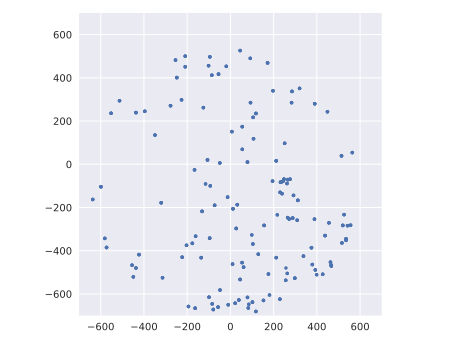

Calibration
If we rotate the board, the direction of the Earth's magnetic field with respect to the magnetometer should change but its magnitude should not! Yet, the magnetometer indicates that the magnitude of the magnetic field changes as the board rotates.
Why's that the case? Turns out the magnetometer needs to be calibrated to return the correct answer.
The calibration involves quite a bit of math (matrices) so we won't cover it here but this Application Note describes the procedure if you are interested. Instead, what we'll do in this section is visualize how off we are.
Let's try this experiment: Let's record the readings of the magnetometer while we slowly rotate the
board in different directions. We'll use the iprintln macro to format the readings as Tab
Separated Values (TSV).
#![deny(unsafe_code)] #![no_main] #![no_std] #[allow(unused_imports)] use aux15::{entry, iprint, iprintln, prelude::*, I16x3}; #[entry] fn main() -> ! { let (_leds, mut lsm303dlhc, mut delay, mut itm) = aux15::init(); loop { let I16x3 { x, y, z } = lsm303dlhc.mag().unwrap(); iprintln!(&mut itm.stim[0], "{}\t{}\t{}", x, y, z); delay.delay_ms(100_u8); } }
You should get an output in the console that looks like this:
$ # itmdump console
-76 213 -54
-76 213 -54
-76 213 -54
-76 213 -54
-73 213 -55
You can pipe that to a file using:
$ # Careful! Exit any running other `itmdump` instance that may be running
$ itmdump -F -f itm.txt > emf.txt
Rotate the board in many different direction while you log data for a several seconds.
Then import that TSV file into a spreadsheet program (or use the Python script shown below) and plot the first two columns as a scatter plot.
#!/usr/bin/python
import csv
import math
import matplotlib.pyplot as plt
import numpy as np
import seaborn as sns
import sys
# apply plot style
sns.set()
x = []
y = []
with open(sys.argv[1], 'r') as f:
rows = csv.reader(f, delimiter='\t')
for row in rows:
# discard rows that are missing data
if len(row) != 3 or not row[0] or not row[1]:
continue
x.append(int(row[0]))
y.append(int(row[1]))
r = math.ceil(max(max(np.abs(x)), max(np.abs(y))) / 100) * 100
plt.plot(x, y, '.')
plt.xlim(-r, r)
plt.ylim(-r, r)
plt.gca().set_aspect(1)
plt.tight_layout()
plt.savefig('emf.svg')
plt.close

If you rotated the board on a flat horizontal surface, the Z component of the magnetic field should have remained relatively constant and this plot should have been a circumference (not a ellipse) centered at the origin. If you rotated the board in random directions, which was the case of plot above, then you should have gotten a circle made of a bunch of points centered at the origin. Deviations from the circle shape indicate that the magnetometer needs to be calibrated.
Take home message: Don't just trust the reading of a sensor. Verify it's outputting sensible values. If it's not, then calibrate it.